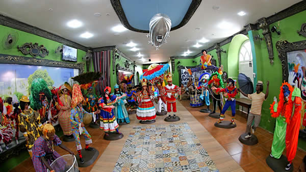
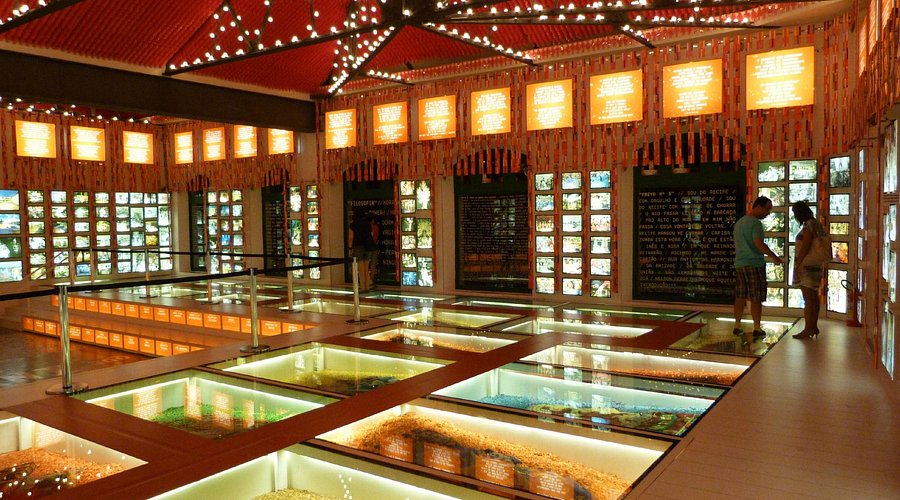

Embaixada dos Bonecos Gigantes
A Embaixada dos Bonecos Gigantes é um espaço dedicado aos famosos bonecos gigantes, que são tradição no carnaval pernambucano. Os visitantes podem ver de perto esses bonecos e conhecer mais sobre a cultura local.
Paço do Frevo
O Paço do Frevo é um museu dedicado ao frevo, ritmo e dança tradicionais de Pernambuco. O local oferece uma imersão na história do frevo, com exposições interativas e aulas de dança.
